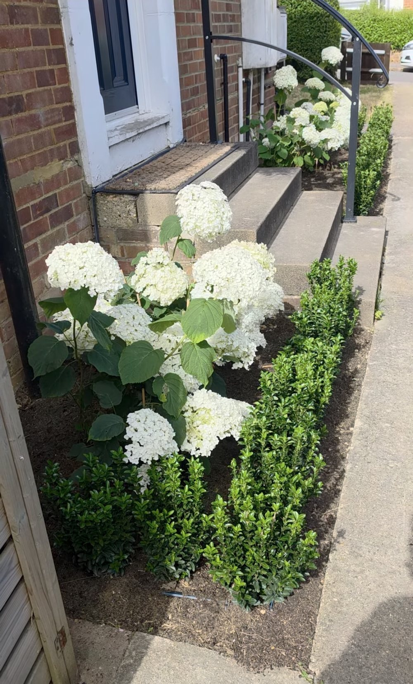
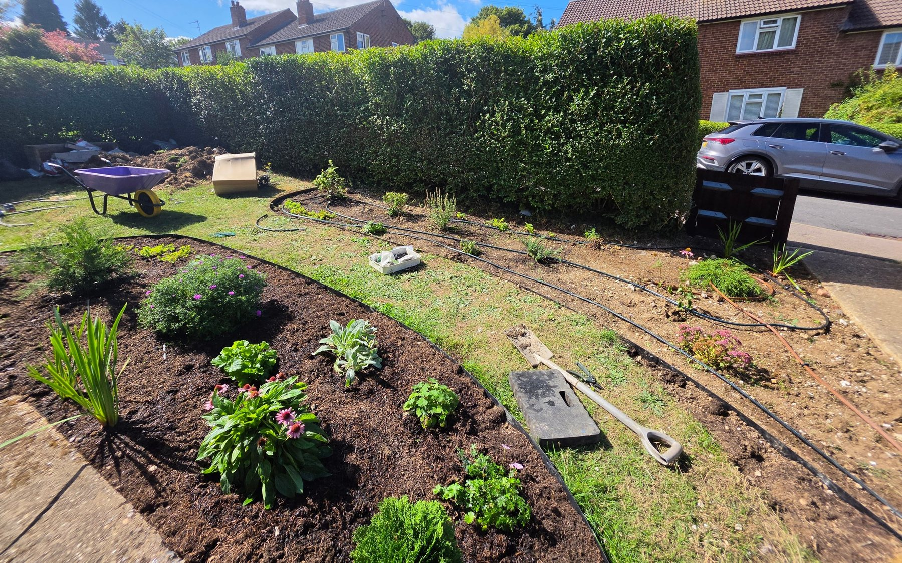
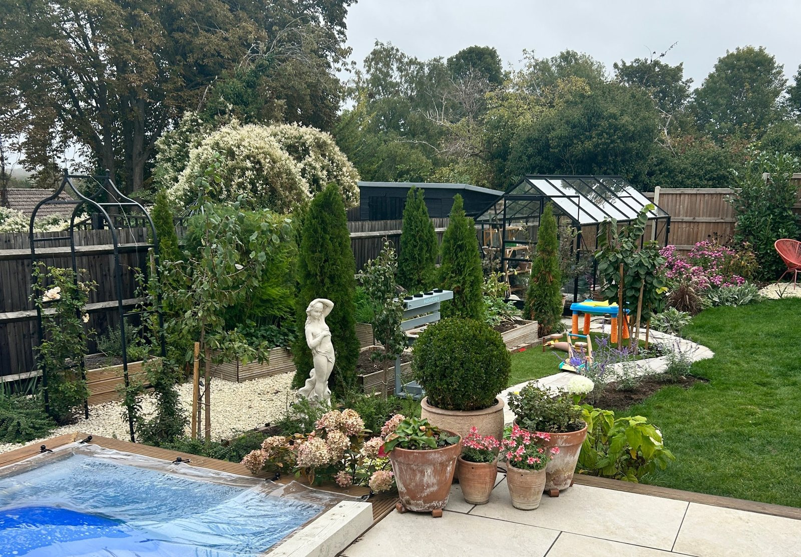
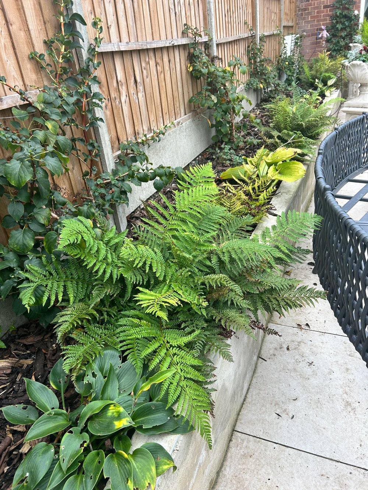
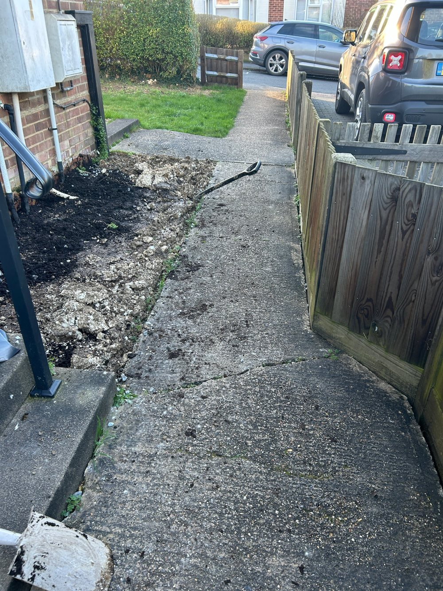
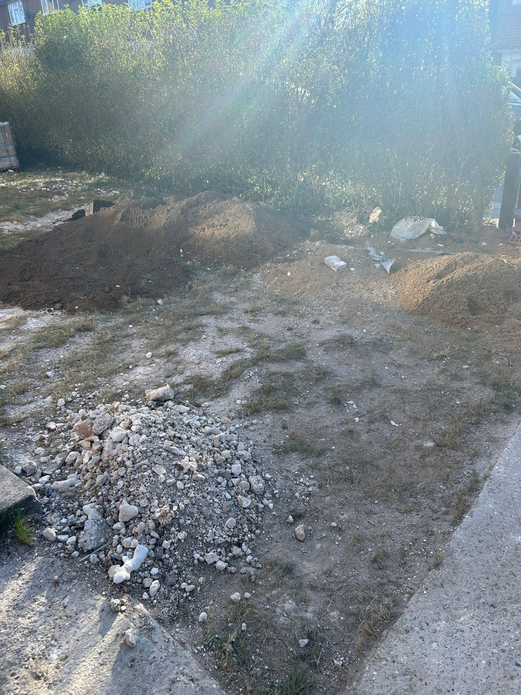
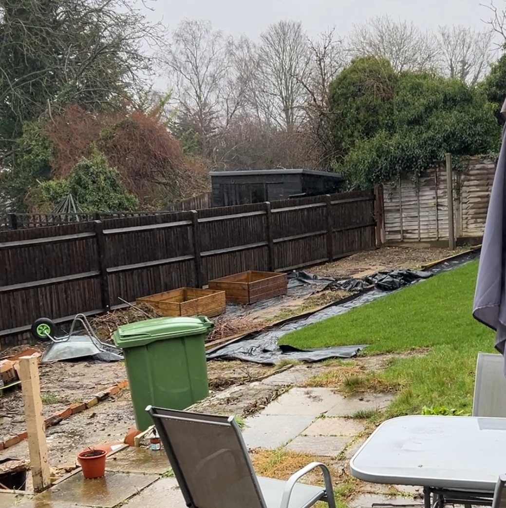
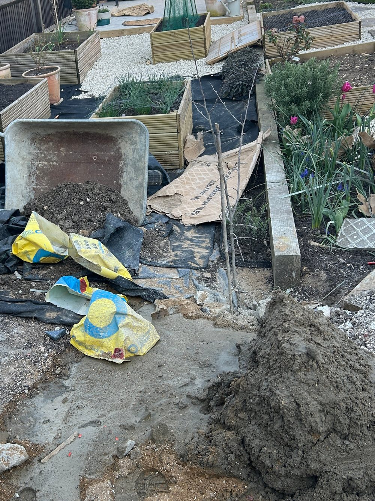
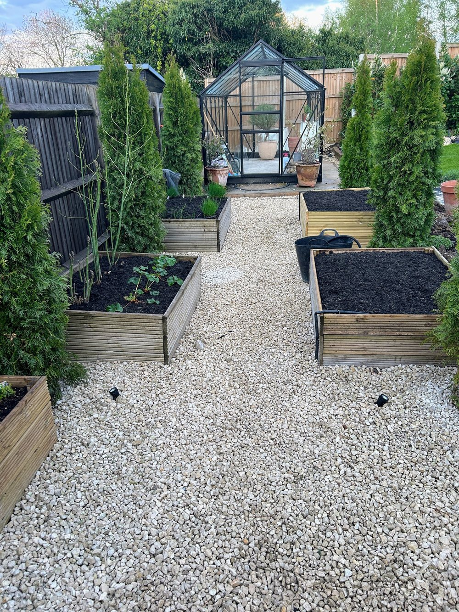
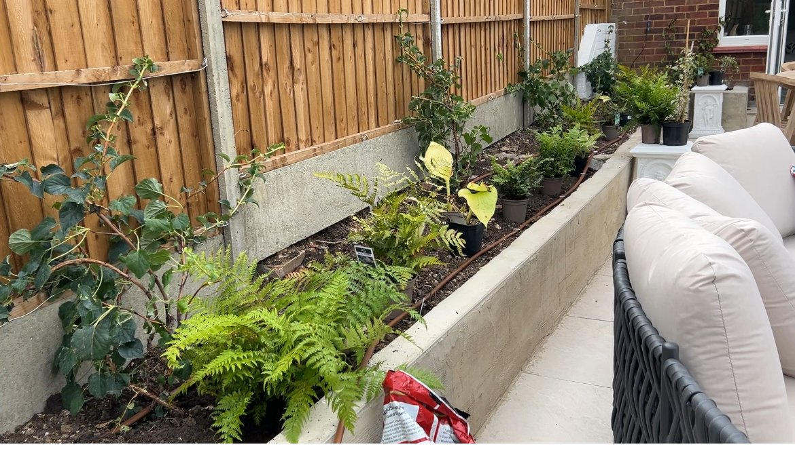

Choose a project to see how the space was transformed.




A bare strip of soil beside the front steps became a layered border. White hydrangeas give height and soft, generous flowers, while a low evergreen hedge in front adds neat structure. The entrance now feels welcoming and cared for, instead of empty.

A rough patch of rubble and piled soil became defined, curved planting beds, edged and mulched and filled with a mix of plants. Drip irrigation was laid through the beds so every plant is watered at the roots using far less water, which keeps the garden going through hot, dry spells.

A cleared back garden became a space that is beautiful to look at and a pleasure to use. Raised vegetable beds sit either side of a gravel path that leads to the greenhouse, framed by tall evergreens, with borders and lawn alongside. There is somewhere to grow, harvest and enjoy.



A plain rendered raised bed beside the patio was planted with ferns, hostas and climbers, with a drip line along the soil. As it has grown it has turned into a lush, textured edge to the seating area, softening the fence and bringing the whole patio to life.

I would love to hear about your garden.